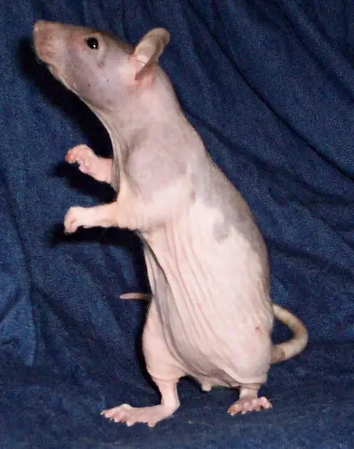
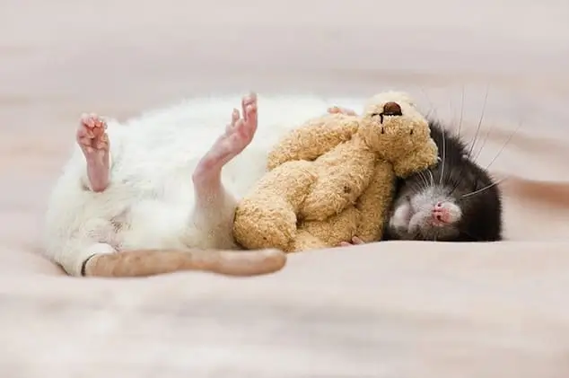
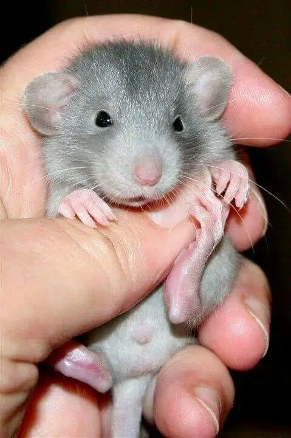

Varieties of Rats
As in other pet species, a variety of colors, coat types, and other
features that do not appear in the wild have either been developed, or
have appeared spontaneously.
Fancy rats in themselves are a subspecies and as such do not have
distinctive breeds.
Any individual rat may be defined one or more ways by its color, coat,
marking, and non-standard body type.
This allows for very specific classifications such as a ruby-eyed
cinnamon Berkshire rex Dumbo.
Coloring
While some pet rats retain the agouti coloring of the wild brown rat
(three tones on the same hair), others have solid colors (a single color
on each hair), a trait derived from rats with black coats.
Agouti-based colors include agouti, cinnamon, and fawn.
Black-based colors include black, beige, blue, and chocolate.
Eye color is considered a subset of coloring, and coat color definitions
often include standards for the eyes, as many genes which control eye
color will also affect the coat color or vice versa.
The American Fancy Rat and Mouse Association (AFRMA) lists black, pink,
ruby, and odd-eyed (two differently colored eyes) as possible eye
colors, depending on the variety of rat shown.
Ruby refers to eyes which at a glance appear black, but on closer
observation are a deep, dark red.
Color names can vary for more vaguely defined varieties, like lilac and
fawn, while the interpretations of standards can fluctuate between (and
even within) different countries or clubs.
Markings
Himalayan rats have a unique color and marking variation Further
dividing the varieties of fancy rats are the many different markings.
Fancy rats can appear in any combination of colors and markings.
The markings are typically in reference to the patterns and ratios of
colored hair versus white hair.
Two extremes would be a self (completely solid, non-white color) and a
Himalayan (completely white except blending into colored areas at the
nose and feet, called points, as in a Himalayan cat's markings).
Markings have a strict standard, with detailed terminology, for showing
in fancy rat pet shows.

However, many domestic rats are not closely bred to any color standard;
many of those found in pet shops will have mismarkings from a formal
breeding perspective, which are defined as variations in markings that
are not recognized as conforming to a breed standard published by a rat
fancier organisation.
Commonly recognized standards include:
Berkshire – colored top, white belly hooded – color runs in a saddle, a
single, unbroken line from the full head down to the spine and possibly
partly down the tail.
capped – color on the full head only.
blazed – colored head (capped) or body (Irish, Berkshire or self) with a
triangular wedge of white fur over the face.
variegated – any form of mismatched oddities in the fur. Can be anything
from a broken or spotted hood to a misshaped blaze.
Irish or English Irish – In England, the Irish is standardized by the
NFRS as an equilateral triangle of white with a side that begins at the
chest, or between the front legs, and where the point ends mid-length.
In the United States and elsewhere, clubs like the AFRMA distinguish
this marking as the English Irish and allow for another standardized
Irish in which the rat may have white of an even or symmetrical nature
anywhere along its underside.
Other marking varieties include spotted or Dalmatian (named for the
spotted Dalmatian dog), Essex, masked, Himalayan (typically a gradient
of color along the body, darkest at the base of the tail and nose as in
Siamese cats), and Down Under or Downunder (an Australian variety that
has a solid color stripe on the belly or a color marking there that
corresponds to the markings on the top).
Body Type
A male Dumbo rat, a variety with ears placed lower on the head Two of
the most prominent and standardized physical changes applied to rats
through selective breeding are the development of the Manx rat and Dumbo
rat.
The Dumbo rat, whose origins are in the United States, is characterized
by having large, low, round ears on the sides of its head caused by a
recessive mutation, and was named for its resemblance to the fictional
character Dumbo the Flying Elephant.
The Manx rat is tailless due to a genetic mutation, and was named for
the Manx cat which shares this feature, though not necessarily due to
the same mutation.
Breeding Manx rats does raise some ethical and health concerns however,
as rats use their tails for both balance and thermoregulation.

Dwarf fancy rats are much smaller than standards.
Another body type variation that has risen to prominence more recently
in the hobby is the Dwarf rat.
Dwarfism arose as a mutation among Sprague-Dawley rats kept for research
in the 1970s.
Adult dwarfs are considerably smaller than their standard counterparts,
with males between 100 and 130g as opposed to 300g or more.
This strain of dwarfism is caused by reduced production of growth
hormone, and this has other effects in addition to changed overall body
size.
Important for pet-keeping, it reduces the incidence of pituitary and
mammary tumours and nephropathy (liver disease), with the result that
Dwarf rats live 20–40% longer in males and 10–20% longer in females than
their standard counterparts.

However, they may also show some cognitive impairment.
Coat Types
There is a relatively small variety of coats compared to the number of
colors and markings, and not all are internationally standardized. The
most common type is the normal or standard, which is allowed variance in
coarseness between the sexes;
males have a coarse, thick, rough coat, while females' coats are softer
and finer.
Other standardized coats include: rex, in which all the hairs are curly,
even the whiskers;
velveteen, a softer variation of the rex;
satin or silky coat, which is extra-soft and fine, with a sheen; and
Harley, characterized by wispy long straight hairs.
Remaining coat
types are not defined by the hair itself, but rather by the lack of it,
such as hairless rats.
Hairless Rats
Even though this rat is hairless, pigmentation indicates that it is a
hooded rat.
See also: Hairless laboratory rats Hairless rats are a coat variety
characterized by varying levels of hair loss.
One type of hairless rat is bred from curly-coated rexes.
These range from having areas of very short fur to being completely
bald.

Since rex is a dominant trait, there only needs to be one rex parent to
produce curly rex-coated offspring.
However, when two rex parents are bred, two copies of the trait may be
present in the offspring.
This causes varying levels of hairlessness, and has earned the
colloquial name "double rex".
The other type of hairless rat is sometimes referred to as a "true
hairless".
This is caused by a different gene, and is distinguishable from a
hairless double rex by the absence of whiskers.
Unlike a double rex, this type of hairless rat is incapable of growing
hairs on any part of the body.
One additional subset of semi-hairless rats, patchwork rex, constantly
lose their hair and regrow it in different "patches" several times
throughout their life.
Hairless rats may be prone to more health problems than their standard-
or rex-coated counterparts, including a reduced tolerance for cold,
kidney and liver failure, more prone to skin injury, skin conditions,
and shortened life span.
Ethics Of Selective Breeding
There is controversy among rat fanciers in regard to selective breeding.
On one hand, breeding rats to "conform" to a specific standard or to
develop a new one is a large part of what the fancy was founded on.
On the other hand, the process results in many rats who do not
"conform", and are then either given away, sold as food, or killed—the
latter referred to as culling.
There are concerns as to whether breeding hairless and tailless rats is
ethical.
The tail is vital for rats' balance and for adjusting body temperature.
Tailless rats have greater risk of heat exhaustion, poor bowel and
bladder control, falling from heights, and can be at risk for
life-threatening deformities in the pelvic region, like hind leg
paralysis and megacolon.

Similarly, hairless rats are less protected from scratches and the cold
without their coat.
Groups such as the NFRS prohibit the showing of these varieties at their
events and forbid advertisement through affiliated services.
Availability
Because R. norvegicus and related species are seen as pests, their
intentional import into foreign countries is often regulated.
For example, the importation of foreign rodents is prohibited in
Australia, and so various coat types, colors, and varieties have been
bred separately from foreign lines, or are just not obtainable within
that country (for example, hairless and Dumbo rats do not exist in
Australia).

In other areas, like the Canadian province of Alberta, which is
considered rat-free, the ownership of domestic fancy rats outside of
schools, laboratories, and zoos is illegal.